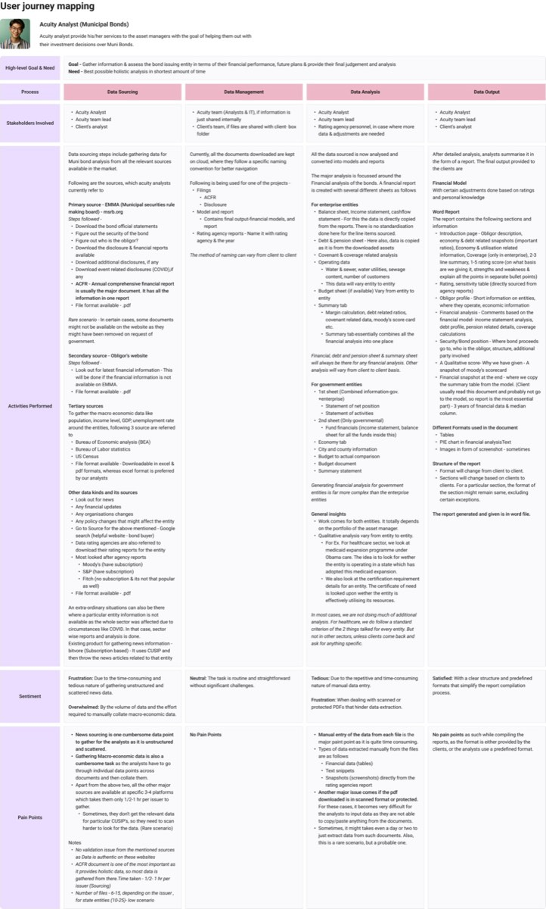
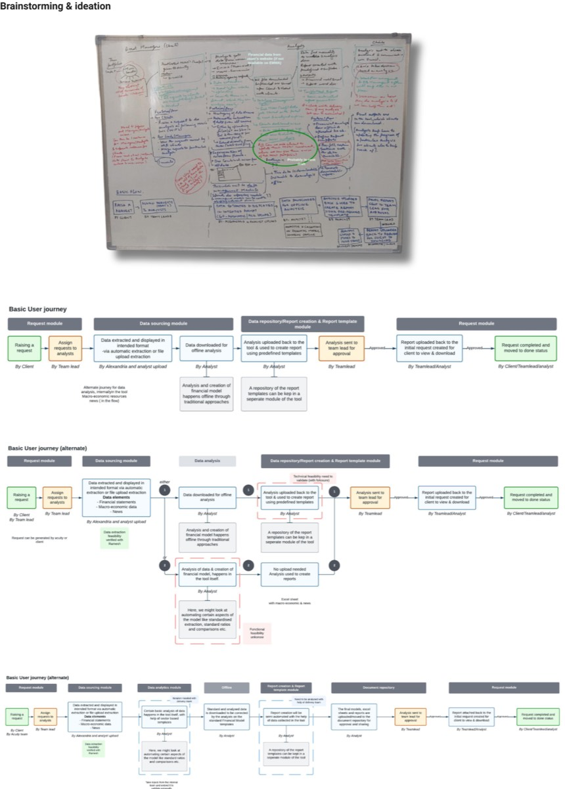
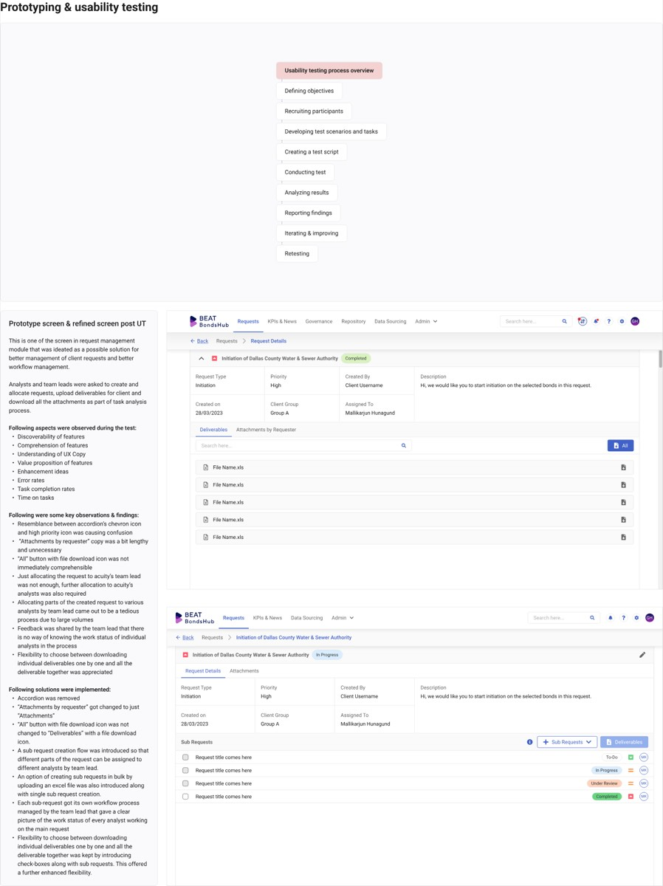
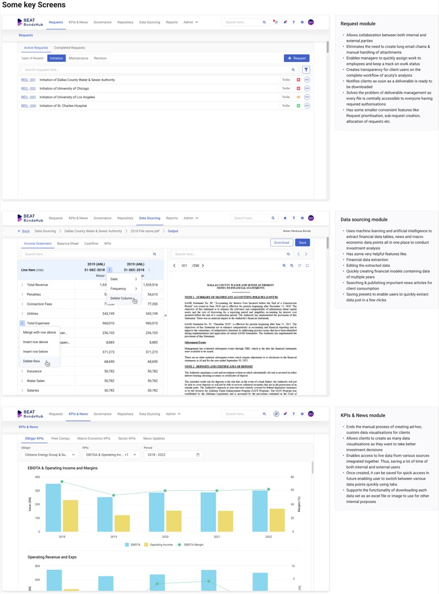

Municipal bonds analysis made easy
- Product
- BEAT BondsHub, a digitally managed service from Acuity Knowledge Partners
- Methods
- Secondary research, stakeholder interviews, contextual inquiry, shadowing, surveys, thematic analysis, usability testing
- Research sample
- 19 participants: 11 analysts, 5 managers, 3 developers
- Research plan
- 5 weeks, plus prototyping and usability testing
Analysts spent most of their time on manual data entry, not on judgment. The research pointed design at extraction first.
Results
| Workflow | 40 hours reduced to 28 hours, a 30% efficiency gain |
|---|---|
| Process | Manual, now automated |
| Customer satisfaction | 80% CSAT to 90% CSAT |
| Timeline | All in 6 months, before the AI era |
These figures are as reported on the project summary.
What BondsHub is
BondsHub is a digitally managed service. Clients use a digital platform for workflow management, backed by municipal bond experts. It exists to give larger coverage of the municipal universe, a cost-effective alternative to fully manual analysis, faster turnaround, and a central, compliant data repository.
- Automated financial models built from extracted data
- KPI-driven analytics by county, sector and district, with macro-economic factors in one time frame
- Periodic news tracking with summaries in several output formats
- User and data traceability: who did what, and when
- Quality checks through data validation, with several rounds of maker and checker rules
- Several AI engines, via APIs, to extract and analyse data from financial, macro-economic and news sources
Research design
The plan ran in five phases: secondary research (week 1), research planning (week 2), primary research (weeks 3 and 4), analysis and synthesis (week 5), then prototyping and usability testing.
- Understanding domain
- Proto-persona study
- Roles and responsibilities
- Workflow and processes
- Sample recruitment plan
- Research questions
- Interview script and probing points
- Note-taking sheet
- Stakeholder interviews
- User research: contextual inquiry, shadowing
- Surveys
- Data organization
- Thematic analysis
- Affinity mapping
- Persona creation
- User journey mapping
- Prototyping
- Task analysis
- Feedback loop
- Pilot testing
Secondary research
Research started with the domain: what municipal bonds are and their types, their investment characteristics, how analysis and evaluation work, who the key players are, and what financial analysts do. That produced a proto-persona and a first map of roles, workflows and processes.
Primary research
Stakeholder interviews, contextual inquiry and shadowing, and surveys.
| Group | User type | Sample |
|---|---|---|
| A | Municipal bonds research analysts | 11 |
| B | Research managers | 5 |
| C | Development team members | 3 |
The questions that mattered
- What are the step-by-step processes the research team follows today?
- Which tasks in the workflow take the most time?
- What frustrates analysts about existing tools and processes?
- What do clients need in data presentation, report accuracy and accessibility, and how do they use the reports?
- What are the current metrics for time spent, error rates, client satisfaction and retention, and how will we measure improvement after launch?
What the research showed
Synthesis used data organization, thematic analysis, affinity mapping, personas and journey mapping. Eight insights shaped the design.
- Prioritize sourcing and analysis over management and output. These two phases carry the friction.
- Solve extraction, not analysis. The analyst's core need is removing manual data entry from tables, text and screenshots, not decision support.
- Skip source verification. Trust in the main disclosure source and in agency data is already established, so effort belongs in retrieval and structure.
- Design a flexible skeleton, not a fixed template. Report structure stays consistent while section content changes by sector and client.
- Templatize analysis the way output already is. Predefined structure, not less work, is what turns tedium into satisfaction.
- Separate the routine from the rare. Fast aggregation for multi-source gathering, and a separate fallback path for scanned or protected PDFs.
- Segment by issue type, not just by client. Revenue bonds and general obligation bonds need very different depth of analysis.
- Optimize for time per issuer, not quality. Analysts trust their judgment, so the success metric is speed to an accurate output.
Three personas
- Acuity analyst (25 to 35, 3 to 7 years in municipal bonds): sources data from primary, secondary and tertiary sources and builds models. Pain points: manual data entry, and scanned or protected PDFs. “Manual data entry can be very time-consuming, especially with protected PDFs.”
- Acuity team lead (35 to 45, 10+ years): reviews and approves models and reports, and spreads workload across analysts. Pain points: consistency across client formats, and workload distribution.
- Client analyst (30 to 40, 5 to 10 years): reviews Acuity's output to make investment decisions. Pain points: confirming the data is complete, and understanding detail in complex reports.
Journey mapping the analyst

- Data sourcing: frustrating. News and macro-economic data are unstructured and scattered, while the main filings sit in 3 to 4 known places and take about half an hour to an hour per issuer.
- Data management: neutral and routine, with no pain points.
- Data analysis: tedious. Manual entry from each file is the biggest pain point, and scanned or protected PDFs can take a day or two to extract.
- Data output: satisfied. The report format is predefined, in a Word file whose sections change by client.
Ideation

A whiteboard session put client, analyst and team-lead needs on one wall. The basic user journey was then drawn in three iterations, each placing the analysis step differently: offline as today, inside the tool with automated extraction, or split across an analytics module and a document repository. The iterations carry open questions on technical and functional feasibility.
Prototyping and usability testing

Testing covered discoverability and comprehension of features, UX copy, value proposition, enhancement ideas, error rates, task completion and time on task.
What testing found
- The accordion's chevron looked like the high-priority icon, which caused confusion.
- The “Attachments by requester” copy was too long.
- The “All” button with a file icon wasn't understood at once.
- Assigning a request to the team lead wasn't enough: the lead also had to split it across analysts, which was tedious at high volumes.
- Team leads had no way to see each analyst's progress on a request.
- Users liked choosing between downloading deliverables one by one or all together.
What changed
- Removed the accordion
- Shortened the copy to “Attachments”
- Renamed the download button “Deliverables”, with a download icon
- Added sub-requests, so different parts of a request go to different analysts, created singly or in bulk from an Excel file
- Gave each sub-request its own workflow, so the team lead sees every analyst's status
- Kept the download choice, adding check boxes to select individual deliverables
Key screens

- Request module: internal and external parties collaborate in one place, replacing long email chains and manual attachment handling. Managers assign work and track status, and clients see the whole workflow. A deliverable is available to everyone with access once ready.
- Data sourcing module: machine learning and AI extract financial tables, news and macro-economic data into one place. Analysts can edit extracted data, build multi-year financial models quickly, and use presets to extract data in a few clicks.
- KPIs and news module: ends the manual creation of ad-hoc charts. Clients build their own visualizations from live data, save them, and download data as Excel or images.
The full prototype of the key flow, creating an obligor's financial model, is in Figma.